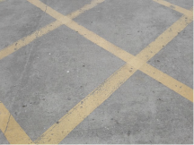
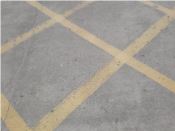
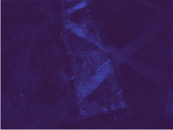
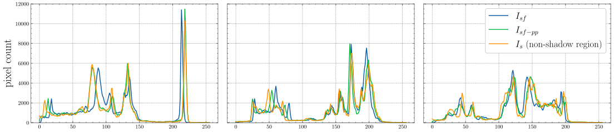
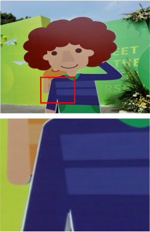
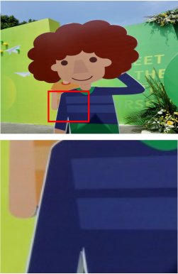
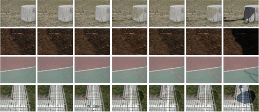

Abstract
In the field of deep learning, has seen significant advancements; however, shadow removal remains a persistent challenge owing to the variable sizes and colors of shadows influenced by lighting conditions. This study proposes a novel shadow feature refinement network (SFR-Net), which leverages supervised learning, feature refinement loss, and knowledge distillation to enhance shadow removal performance. A dedicated post-processing algorithm is further introduced to restore natural color consistency in the generated shadow-free images. We evaluated our method on two public datasets: the adjusted image shadow triplet dataset (ISTD+) and the shadow removal dataset (SRD), which demonstrate strong generalization capabilities under diverse conditions. On ISTD+, our model achieved a root mean square error (RMSE) of 3.4627 and structural similarity index measure (SSIM) of 0.9382 across the entire image. On SRD, it recorded an RMSE of 4.3781 and an SSIM of 0.9341. These comprehensive results show that our approach performs competitively across both shadow and non-shadow regions while setting a promising direction for robust and perceptually natural shadow removal.
Why Is Shadow Removal Hard?
A shadow changes the illumination of a region non-uniformly, which alters its texture and colors, and its penumbra makes the boundary hard to define. Image inpainting models already reconstruct masked regions from their context, but they discard the masked pixels. In addition, the shadow and ground-truth images of a dataset are captured at different times, so a model that fits the ground truth also learns global color changes caused by lighting, and its output drifts away from the colors of the input image.
Method

Network architecture of SFR-Net. The frozen guiding network GI reconstructs the ground truth from an empty mask; the guided network GS removes shadows from the shadow image and its mask, and its deep features are refined toward those of GI.
Guiding & Guided Networks
Both are the LaMa inpainting generator: three downsampling layers, 18 fast Fourier convolution (FFC) residual blocks, and three upsampling layers. GI is pretrained and frozen and receives Igt ⊕ Mgt; GS receives the shadow image and its mask, Is ⊕ Ms, and is trained adversarially against a patch discriminator.
Feature Refinement Loss
Lfr is the mean L2 distance between the activations of GI and GS over a set of target layers. GS thus learns the representation GI uses to reconstruct the shadow-free image. Applying it to the deep stage (the last six FFC blocks) works best.
Color Restoration
The input and the result should agree outside the shadow. For each RGB channel, a linear regression Is = β0 + β1·Isf is fitted on the non-shadow pixels and applied to the whole output, giving Isf-pp in under 0.07 s per image.
Besides Lfr, GS is trained with a non-saturating adversarial loss, a high receptive field perceptual loss (LHRFPL) computed with an ADE20k ResNet-50, discriminator feature matching (LDiscPL), and a mix loss that combines MS-SSIM and L1 (γmix = 0.025).

The FFC block processes local features with convolutions and global features with a spectral transform (Fourier unit and local Fourier unit).
Main Results
All methods are evaluated at 640×480. RMSE is computed in LAB color space, SSIM and PSNR in RGB. Bold and underline mark the best and second-best results. For SRD, which has no ground-truth masks, shadow masks predicted by DHAN are used for training and evaluation.
ISTD+
| Method | Shadow Region | Non-Shadow Region | All | ||||||
|---|---|---|---|---|---|---|---|---|---|
| RMSE↓ | SSIM↑ | PSNR↑ | RMSE↓ | SSIM↑ | PSNR↑ | RMSE↓ | SSIM↑ | PSNR↑ | |
| Shadow Image | 30.4831 | 0.9265 | 20.8095 | 3.1493 | 0.9552 | 33.8855 | 12.4080 | 0.8747 | 20.2209 |
| DHAN | 8.6784 | 0.9833 | 32.4535 | 6.7880 | 0.9433 | 26.2158 | 7.2224 | 0.9244 | 24.8628 |
| SP+M+I Net (resize) | 6.2019 | 0.9774 | 35.7971 | 4.3615 | 0.9071 | 30.8697 | 4.7650 | 0.8800 | 29.1754 |
| FusionNet (resize) | 6.6084 | 0.9605 | 34.7492 | 4.6387 | 0.8038 | 29.1078 | 5.0445 | 0.7567 | 27.6059 |
| SG-ShadowNet | 6.0283 | 0.9844 | 35.9620 | 3.7969 | 0.9503 | 32.7644 | 4.2651 | 0.9304 | 30.5036 |
| BMNet | 5.5477 | 0.9865 | 36.8070 | 2.9791 | 0.9576 | 34.4725 | 3.5375 | 0.9410 | 31.8521 |
| ShadowFormer | 5.0755 | 0.9864 | 38.0692 | 2.8663 | 0.9550 | 35.1463 | 3.3461 | 0.9387 | 32.7827 |
| Inpaint4Shadow | 6.5203 | 0.9621 | 35.2136 | 4.4683 | 0.8234 | 29.8008 | 4.9124 | 0.7783 | 28.2474 |
| ShadowDiffusion | 5.8667 | 0.9782 | 35.8192 | 3.2892 | 0.9253 | 32.8163 | 3.8768 | 0.8995 | 30.3881 |
| HomoFormer | 5.0098 | 0.9840 | 37.4862 | 3.1282 | 0.9350 | 33.3300 | 3.5245 | 0.9161 | 31.3985 |
| InstanceShadowDiffusion | 5.0735 | 0.9865 | 37.7354 | 3.1269 | 0.9514 | 34.3006 | 3.5342 | 0.9356 | 32.1079 |
| SFR-Net (Ours) | 4.9750 | 0.9865 | 37.8747 | 3.0631 | 0.9550 | 34.5793 | 3.4627 | 0.9382 | 32.3872 |
SRD
| Method | Shadow Region | Non-Shadow Region | All | ||||||
|---|---|---|---|---|---|---|---|---|---|
| RMSE↓ | SSIM↑ | PSNR↑ | RMSE↓ | SSIM↑ | PSNR↑ | RMSE↓ | SSIM↑ | PSNR↑ | |
| Shadow Image | 17.3859 | 0.8694 | 18.7869 | 2.7657 | 0.9683 | 30.2704 | 16.3193 | 0.8206 | 18.0297 |
| DHAN | 3.9867 | 0.9622 | 31.6425 | 2.5106 | 0.9405 | 30.6378 | 5.2274 | 0.8821 | 27.5300 |
| FusionNet (resize) | 4.2753 | 0.9569 | 31.4184 | 2.9092 | 0.9277 | 29.7585 | 5.8187 | 0.8606 | 26.9399 |
| SG-ShadowNet | 3.7124 | 0.9733 | 32.5460 | 1.9659 | 0.9748 | 33.9631 | 4.4926 | 0.9340 | 29.6179 |
| BMNet | 3.6952 | 0.9656 | 32.3086 | 2.3587 | 0.9449 | 31.0833 | 4.8848 | 0.8889 | 27.9986 |
| ShadowFormer | 3.5833 | 0.9739 | 33.0057 | 1.9617 | 0.9758 | 33.7010 | 4.4366 | 0.9374 | 29.6462 |
| Inpaint4Shadow | 3.8828 | 0.9713 | 32.2222 | 2.1370 | 0.9739 | 32.7109 | 4.8368 | 0.9324 | 28.7194 |
| ShadowDiffusion | 4.1636 | 0.9662 | 31.7264 | 2.5340 | 0.9651 | 31.2735 | 5.3763 | 0.9222 | 27.8394 |
| HomoFormer | 3.4217 | 0.9676 | 33.1020 | 2.2344 | 0.9502 | 31.9545 | 4.5635 | 0.8988 | 28.8686 |
| InstanceShadowDiffusion | 6.1959 | 0.9705 | 34.1167 | 3.6498 | 0.9611 | 32.4489 | 4.4195 | 0.9259 | 29.4738 |
| SFR-Net (Ours) | 3.5184 | 0.9744 | 33.1909 | 1.9665 | 0.9727 | 33.7399 | 4.3781 | 0.9341 | 29.8287 |

SRD results. Columns from left to right: input, ShadowDiffusion, HomoFormer, ShadowFormer, BMNet, SFR-Net (ours), InstanceShadowDiffusion, ground truth.
Where Should Features Be Refined?

The 18 FFC residual blocks are split into shallow, middle, and deep stages of six blocks each.
Applying Lfr to any stage improves on training without it, and for the same number of refined stages, including the deep stage gives the lowest shadow-region and whole-image RMSE. In early layers, the features of the shadow image and its mask are not yet fused, so matching them to the ground-truth features helps little; in deep layers they are, and refinement toward the guiding network pays off. Results below are on ISTD+ without post-processing.
| Lfr stage | Shadow Region | Non-Shadow Region | All | ||||||
|---|---|---|---|---|---|---|---|---|---|
| RMSE↓ | SSIM↑ | PSNR↑ | RMSE↓ | SSIM↑ | PSNR↑ | RMSE↓ | SSIM↑ | PSNR↑ | |
| Config. #1 (Shallow) | 6.0479 | 0.9852 | 35.9776 | 3.6449 | 0.9515 | 32.5604 | 4.1722 | 0.9332 | 30.2424 |
| Config. #2 (Middle) | 5.5084 | 0.9858 | 36.8616 | 3.4796 | 0.9542 | 33.7787 | 3.9229 | 0.9369 | 31.4653 |
| Config. #3 (Deep) | 5.2107 | 0.9862 | 37.4321 | 3.2502 | 0.9542 | 34.0711 | 3.6675 | 0.9372 | 31.8471 |
| Config. #4 (Shallow & Middle) | 5.6130 | 0.9849 | 36.5651 | 3.3170 | 0.9545 | 33.6416 | 3.8253 | 0.9360 | 31.3321 |
| Config. #5 (Middle & Deep) | 5.4761 | 0.9857 | 37.1288 | 3.3211 | 0.9518 | 34.0083 | 3.7688 | 0.9341 | 31.7260 |
| Config. #6 (All Stages) | 5.4430 | 0.9854 | 36.8779 | 3.3861 | 0.9540 | 33.6865 | 3.8286 | 0.9361 | 31.3961 |
| Without Lfr | 6.0975 | 0.9849 | 35.4867 | 3.7747 | 0.9533 | 31.7673 | 4.2855 | 0.9347 | 29.6694 |
Contribution of each loss (Config. #3)
| LLaMa | Lmix | Lfr | Shadow Region | Non-Shadow Region | All | |||||||
|---|---|---|---|---|---|---|---|---|---|---|---|---|
| RMSE↓ | SSIM↑ | PSNR↑ | RMSE↓ | SSIM↑ | PSNR↑ | RMSE↓ | SSIM↑ | PSNR↑ | ||||
| ✓ | 7.4366 | 0.9774 | 34.0190 | 5.1019 | 0.9249 | 29.7530 | 5.6161 | 0.8976 | 27.8767 | |||
| ✓ | ✓ | 6.0975 | 0.9849 | 35.4867 | 3.7747 | 0.9533 | 31.7673 | 4.2855 | 0.9347 | 29.6694 | ||
| ✓ | ✓ | 6.4203 | 0.9827 | 35.6343 | 4.1685 | 0.9472 | 31.5645 | 4.6311 | 0.9263 | 29.7403 | ||
| ✓ | ✓ | ✓ | 5.2107 | 0.9862 | 37.4321 | 3.2502 | 0.9542 | 34.0711 | 3.6675 | 0.9372 | 31.8471 | |
LLaMa is the original LaMa objective (adversarial, HRFPL, feature matching, and L1). Lmix mainly helps the non-shadow region, Lfr gives a higher PSNR in the shadow region and over the whole image, and combining both is best in every region and metric.

Feature maps of the 20th FFC block (a) without and (b) with Lfr. With Lfr, the maps are more spatially coherent and richer in texture.







Images (top) and residual mattes with respect to the ground truth (bottom). With Lfr, the residual left by the shadow is smaller and follows the ground-truth structure.
Color Restoration Post-Processing
We compare six color-mapping algorithms in BGR and LAB space, each fitted on the non-shadow region of every image. Linear regression in BGR space lowers the whole-image RMSE on ISTD+ from 3.6675 to 3.4627 in 0.068 s. Gradient boosting is slightly better on the non-shadow region and the whole image but takes about 2.5 s per image, so linear regression is the default. Histogram matching, color transfer, and gamma correction barely change the non-shadow region but raise the shadow-region RMSE from 5.2 to 8.4–10.8.
Post-processing on ISTD+
| Post-processing | Shadow Region | Non-Shadow Region | All | Time (s) | ||||||
|---|---|---|---|---|---|---|---|---|---|---|
| RMSE↓ | SSIM↑ | PSNR↑ | RMSE↓ | SSIM↑ | PSNR↑ | RMSE↓ | SSIM↑ | PSNR↑ | ||
| SFR-Net (no post-processing) | 5.2107 | 0.9862 | 37.4321 | 3.2502 | 0.9542 | 34.0711 | 3.6675 | 0.9372 | 31.8471 | – |
| + Linear regression (BGR, ours) | 4.9750 | 0.9865 | 37.8747 | 3.0631 | 0.9550 | 34.5793 | 3.4627 | 0.9382 | 32.3872 | 0.068 |
| + Polynomial regression (BGR) | 5.2444 | 0.9860 | 37.6492 | 3.2386 | 0.9553 | 34.3712 | 3.6599 | 0.9380 | 32.1919 | 0.187 |
| + Histogram matching (BGR) | 10.8398 | 0.9698 | 32.9278 | 3.2208 | 0.9541 | 34.2324 | 5.0366 | 0.9185 | 29.9032 | 0.050 |
| + Color transfer (BGR) | 9.2768 | 0.9760 | 33.6943 | 3.2208 | 0.9541 | 34.2324 | 4.5661 | 0.9260 | 30.3646 | 0.056 |
| + Gradient boosting (BGR) | 5.0741 | 0.9862 | 37.7767 | 2.9127 | 0.9563 | 35.0749 | 3.3700 | 0.9390 | 32.6578 | 2.513 |
| + Gamma correction (BGR) | 8.4250 | 0.9806 | 34.8413 | 3.2208 | 0.9541 | 34.2324 | 4.3524 | 0.9300 | 30.9087 | 0.043 |
| + Linear regression (LAB) | 5.0013 | 0.9857 | 37.7963 | 3.1621 | 0.9505 | 34.3575 | 3.5482 | 0.9326 | 32.2254 | 0.054 |
| + Gradient boosting (LAB) | 5.0753 | 0.9862 | 37.7766 | 2.9127 | 0.9562 | 35.0753 | 3.3712 | 0.9390 | 32.6574 | 1.937 |





(a–c) Blue, green, and red histograms. After post-processing, the color distribution of the output follows the ground truth more closely.

Columns from left to right: Isf, linear regression, polynomial regression, color transfer (Reinhard et al.), gradient boosting, gamma correction, Is. Linear regression blends the former shadow region into its surroundings without color artifacts.
Takeaways
- Inpainting priors transfer to shadow removal. Initializing from LaMa and distilling a frozen LaMa that reconstructs the ground truth gives GS a strong target in feature space.
- Refine late, not early. Feature refinement helps most in the deep FFC blocks, where the shadow image and mask features have converged.
- Fix color outside the network. A per-image linear regression on the non-shadow region removes the global color shift learned from mismatched training pairs at negligible cost.
Limitations. The model is trained on ISTD+ and SRD and may not generalize to unseen lighting, object types, noisy backgrounds, or complex overlapping shadows. It requires paired data and a shadow mask at test time, and the post-processing step is separate from the network and is not optimized jointly with it.
BibTeX
@article{han2025sfrnet,
title = {Shadow Feature Refinement Network: Progressive Feature Refinement based on Knowledge Distillation for Effective Shadow Removal},
author = {Donghyun Han and Byoung-dai Lee},
journal = {Multimedia Systems},
volume = {31},
pages = {449},
year = {2025},
doi = {10.1007/s00530-025-02036-5},
eprint = {2610.05325},
archivePrefix = {arXiv}
}